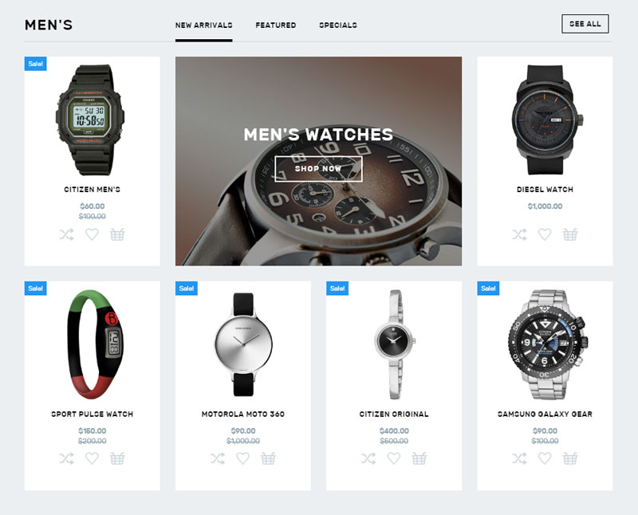
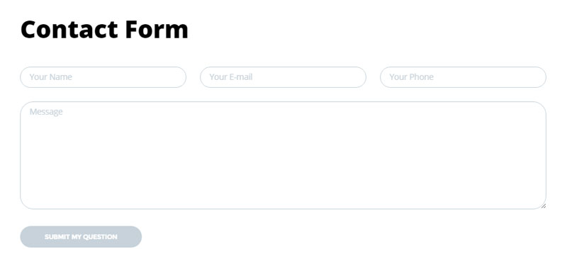
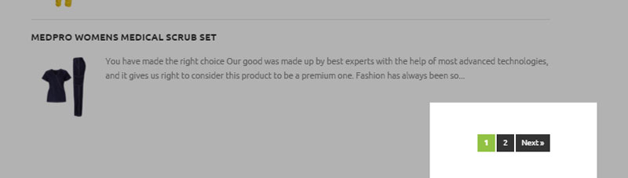

Hero Section
View Component
The hero section often contains a carousel. Implementing this will give me more practice with jQuery animations and DOM manipulation.
jQuery is a crucial part of interactivity and user interfaces on the web. Becoming more familiar with jQuery will greatly improve my ability to provide excellent user experiences. DOM manipulation is a major part of jQuery as well as other JavaScript integration.
Responsive Grid of Equals

The grid of equals is an excellent way to visual display multiple items. Creating this will help practice good visual layout and provide a opportunity to practice responsive design.
With the increase of mobile devices and their varying orientations and screen sizes responsive design is a must. Websites that are not responsive will become virtually worthless going forward. Also visual layout is important for the usability of a website.
Forms

As one of the few ways to get information and input from users forms of all types are important. This is an something that I can definitely use more practice creating.
Providing the user information based on their needs is what takes a static website one step further. However, gathering this information poses challenges. Forms, be they search fields, surveys or contact forms can assist in gathering this information. Learning to create forms and getting feedback so that I can break from the norm and create unique and unobtrusive forms will be helpful moving forward.
Pagination

Sorting lists into functional chunks is something that is necessary to prevent the user from becoming overwhelmed. Pagination is one of the many ways to do this. Learning to implement this will help me with my web functionality.
Pagination relates to usability, something which we have learned is crucial for a user. This keeps the amount of information that a user has to digest from becoming distracting.
Complex Drop Down Menu

Navigation is necessary for facilitate the sorting and categorization of information. Menu's allow the developer to create pages with specific subsets of infor and allow the user to access them. By practicing further creation of menu, particularly more complex ones, I hope to improve my ability to sort and categorize information as well as create interesting and useful navigation.
Again this relates to usability. Menu's need to be clear and visible so that a user can easily find the information they are looking for.
Styling
Font: Open Sans
Color: rgb(64, 64, 64)
Accent Color: rgb(53, 152, 219)
Menu Background Color: rgb(245, 245, 245)
HTML Elements
The menu with be surrounded by a <nav> element
Within this there will be a <ul> with <li> nested within.
Within these <li> elements there will have more <ul> with nested <li>s.
These <li> will either containt simple text links or additional <div>s with <a> links <img> and possible <p>s.
These elements will be hidden or visible depending on the mouse location. The animation and interactivity will be controlled primarily with jQuery.